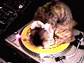
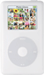
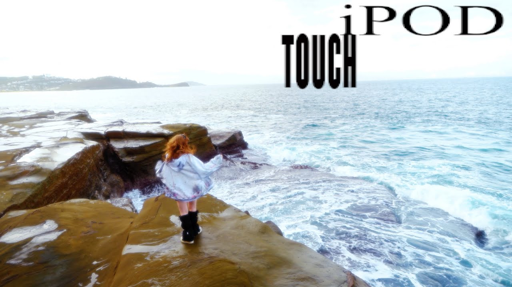
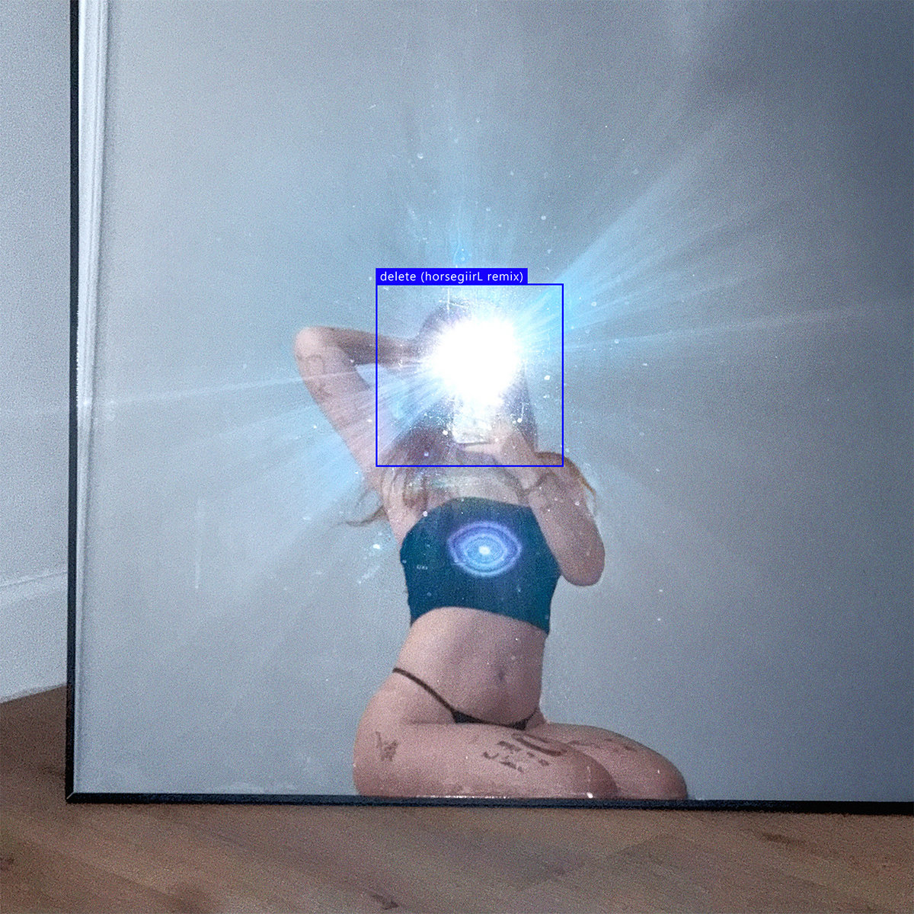
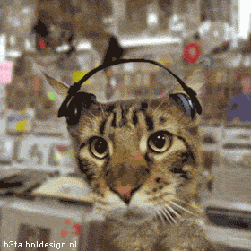
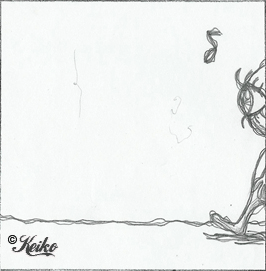
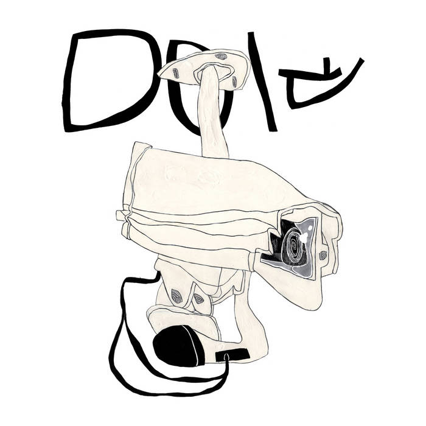

Ninajirachi and underscores are two artists that have been circulating the EDM and hyperpop genres, respectively, for years. In a technical sense, these genres are net art because the sounds they use are created and/or modified using computer software(in these cases, Ableton). Without sound design software, EDM and hyperpop cannot and would not exist. In another sense, though, these songs are net art because they are defined by the artist’s relationship with technology and the internet. In Ninajirachi’s “iPod Touch”, lyrics like “I’ve got a song that nobody knows, and I heard it in a post when I was 12 years old” explain what it was like being on the internet as a young person. Nina is able to capture this new-age nostalgia that people are only just beginning to recognize. In her song “Delete”, she explores feelings of embarrassment and regret in posting a picture of herself to instagram that she wanted her crush to see. The lyric “I’m exposed to my core, on a mega-digital-meta mating ritual” recognizes that this, in fact, is a uniquely online experience. Similarly, underscore’s “Do It” reflects on the modern dating scene. Comparing the process to filling out an application or contract, she starts the song off with questions: “What are your prospects? Do you make your own cash? Do you like rough sex? What kind of car you drive?”. These types of expectations are all too familiar to those with experience on apps like Hinge, Tinder, and Bumble. Although maybe not as blunt, these types of straight-to-the-point questions are hidden in the subtext of dating profiles. Since you only have so much time to make an impression, the pressure is on to make what you deem to be important about yourself known. She follows this by saying, “If I left for three months, and I turned my phone off, would you wait here for me? Sign on the dotted line”. This lyric explores the question: What if I took away the object that brought us together? “Do It” is a critique on how dating has evolved into a transactional game on your phone rather than a way to make meaningful connections. I brought these tracks together because their contents all give insight to what it’s like growing up in the digital age. These experiences aren’t talked about in such depth in other forms of music. I think that because hyperpop and EDM are so fundamentally electronic, it gives a space for young artists to talk about their uniquely electronic-human experiences. I love these songs, and as someone who had internet access from 10 years old, I deeply relate to them. Click on the photos for a link to their respective youtube videos.


"iPod Touch" was Ninajirachi's first single release for her album, "I Love My Computer". It was uploaded on June 19th, 2025(my birthday!)
iPod Touch is an ode to Nina's experience as a young person on the internet.

"Delete" was released by Ninajirachi on August 8th, 2025 along with her album release "I Love My Computer.
It dives into the feeling of vulnerability posting a picture online with the sole intention of someone seeing it.



"Do It" was released by underscores on November 4th, 2025.
It's a pop song written as if the listener is reading a contract for a romantic relationship- similar to how dating apps format likes, dislikes, and interests.
It explores what dating is like as technology advances, and how it's becomming more and more transactional.